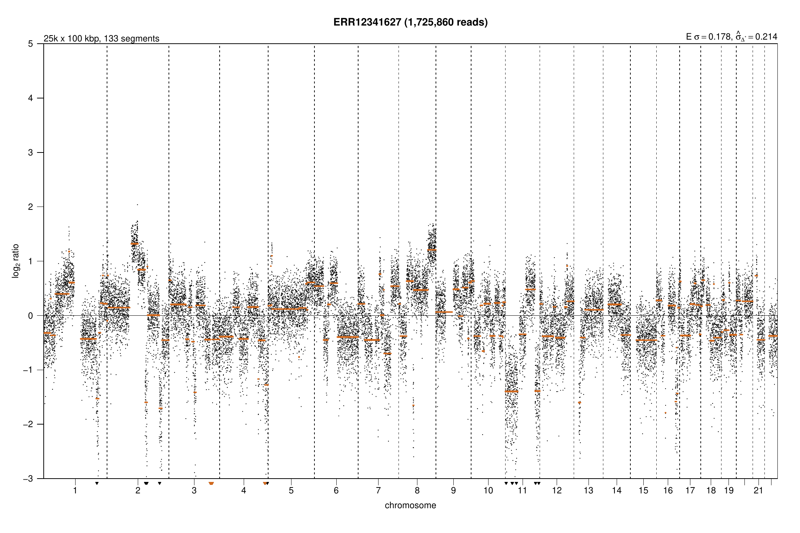
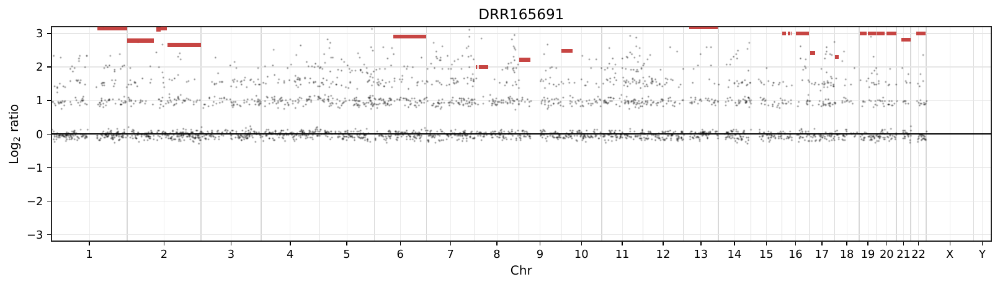
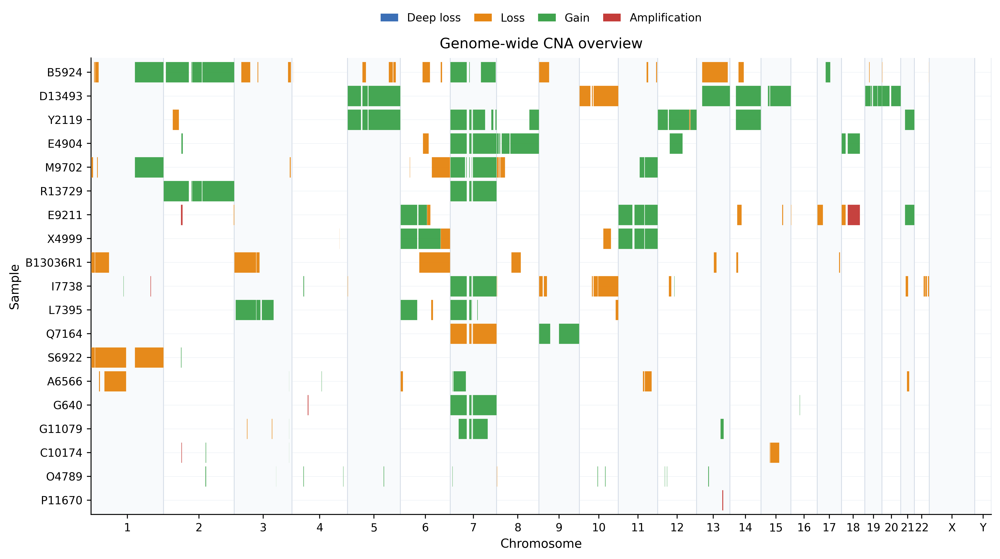
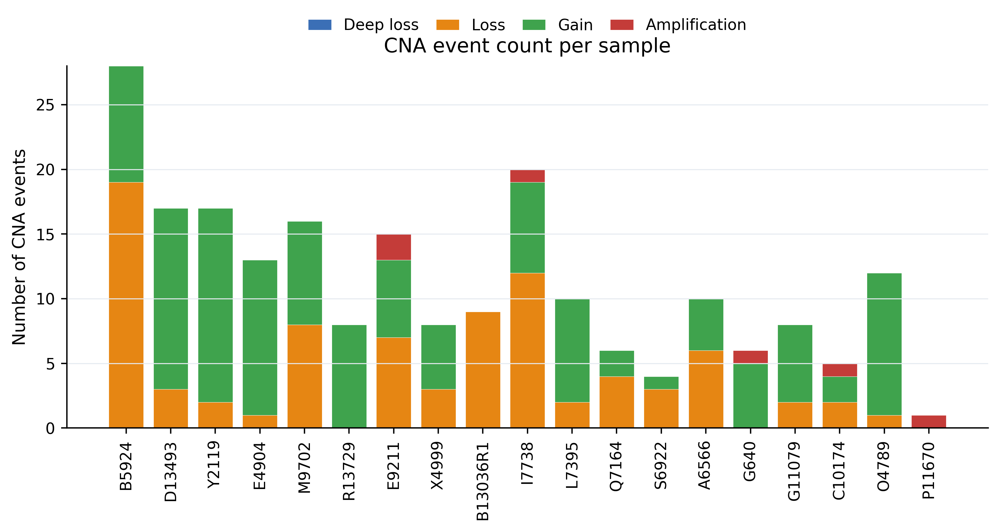
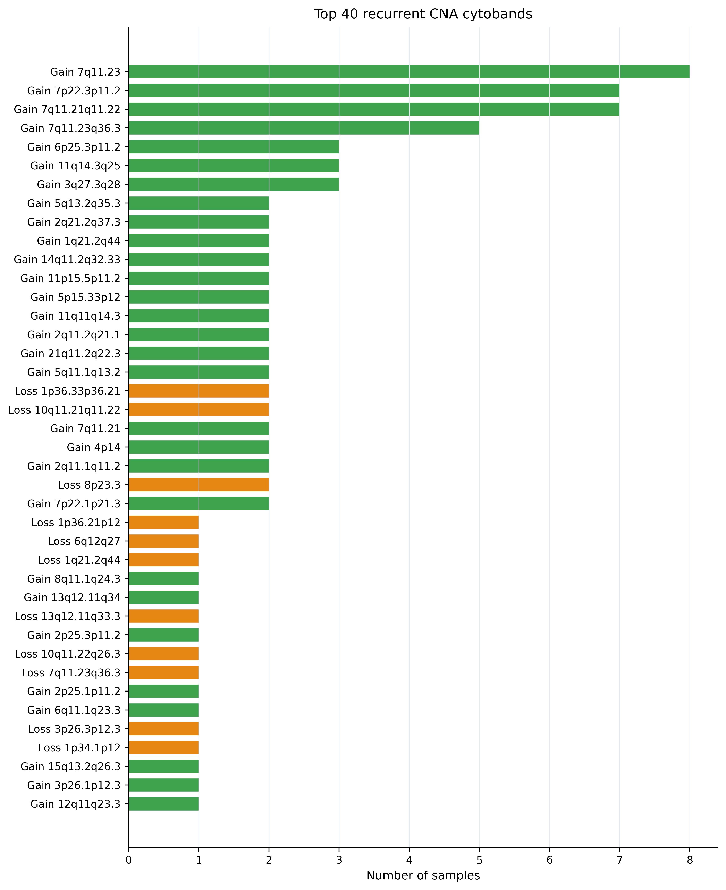

Results gallery¶
The images below are rendered from OncoTracer output files. A plot demonstrates that a workflow completed and shows the CNA profile produced under that configuration; it does not validate a diagnosis.
One-sample Illumina public test¶
Provenance: ENA run ERR12341627, processed by the public Illumina branch in QuickStart Example 1 with qDNAseq at 100 kb. See QuickStart Example 1 for the reproducible command and generated YAML.
Open the original qDNAseq fitted-segment plot PDF.

How to read it: black points are normalized qDNAseq bins; orange horizontal lines are the fitted segment means produced by SAMURAI. Genomic position runs across the chromosomes. Final refined segments and event calls remain available in stages 02 and 03.
ONT ichorCNA-derived test result¶
Provenance: public ONT run DRR165691, processed by the ONT branch in QuickStart Example 1 with ichorCNA-derived 500 kb inputs.
The run produces ichorCNA depth and segment tables. OncoTracer renders the profile from those tables even when an upstream plotting helper encounters missing depth values.
Open the original ichorCNA-derived profile PDF.

How to read it: black points are bin-level log2 ratios; colored horizontal lines are the fitted ichorCNA-derived segment means on the same log2 scale. The chromosome axis shows only chromosomes represented in the sample, so empty X/Y panels are omitted. Broad changes are more defensible than isolated noisy points in low-pass data. Review the used/skipped FASTQ logs, coverage, segment table, and tumor fraction before biological interpretation.
Final OncoTracer Illumina visualizations¶
These are presentation views derived from 03_cna_codification/cna_events.tsv and the refined bin table.



Final OncoTracer ONT visualizations¶


HCC1143 three-library, six-FASTQ public cohort¶
Verified gallery artifact pending
The reproducible downloader and run script are present, but this section intentionally does not claim a cohort result until the complete run, output checks, provenance record, and gallery export have all been verified. The maintainer will replace this notice with the actual plot and measured result summary after that run.
The example contains three paired-end LP-WGS libraries (six physical FASTQ files) from the HCC1143 triple-negative breast-cancer cell line.
| Provenance field | Value |
|---|---|
| Public project | PRJNA454331 |
| Associated study | Ben-David et al., Nature Communications (2018) |
| Libraries/runs | DMSO SRR7085656; BEZ235 SRR7085655; Trametinib SRR7085657 |
| Physical FASTQs | 6: one R1/R2 pair for each of 3 libraries |
| Experimental status | All are TUMOR; DMSO is a treatment control, not a normal genome |
| Download validation | Exact ENA byte count, ENA MD5, and gzip -t; values stored in examples/hcc1143_lpwgs/manifest.tsv |
| Reproduction command | bash examples/hcc1143_lpwgs/run_example.sh --docker |
| Expected result source | test/runs/hcc1143_lpwgs/04_cna_custom_plots/cna_log2_ratio_profiles_all_samples.pdf |
| OncoTracer commit | to be recorded after verified run |
| Container digest | to be recorded after verified run |
| Reference/caller/bin size | to be recorded after verified run |
| Run completion and checks | to be recorded after verified run |
| Biological interpretation | not reported before QC and verified tables are available |
When populated, this gallery entry must distinguish observed signal from inference: report sample names, caller/bin size, QC warnings, number of CNA events, broad profile similarities/differences, and important limitations. Treatment-associated causality must not be inferred from this three-library demonstration alone.
See the example's provenance and resource notes and Output files for the tables behind every plot.